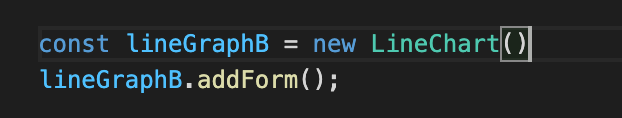
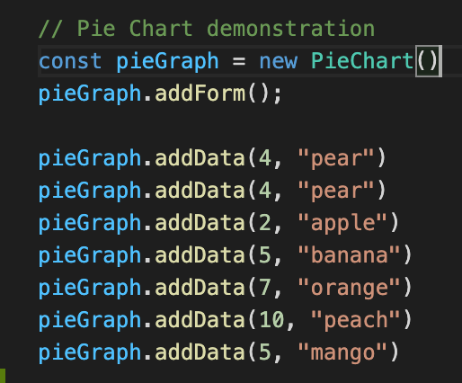
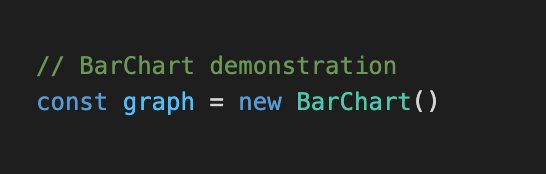
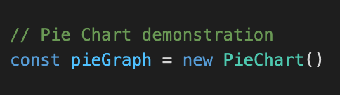
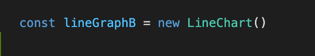
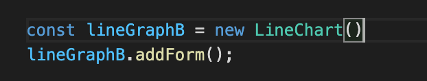
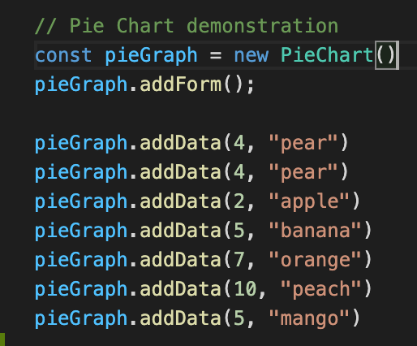
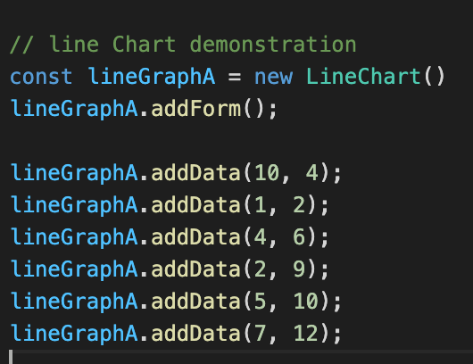
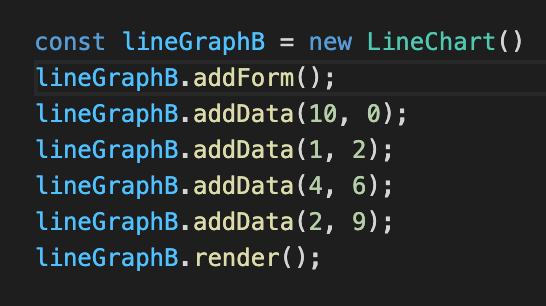

the method enable graph to have a input bar on top of it, which allows front-end user to interact with the graph.
the method which allow piechart to add data
the method which allow barchart to add data

| Name | Type | Description |
|---|---|---|
| BarChart | object |
The chart provided by the library that can help both front-end user and developer to make barchart, either through code or through user interaction. |
| PieChart | object |
The chart provided by the library that can help both front-end user and developer to make PieChart,either through code or through user interaction. |
| LineChart | object |
The chart provided by the library that can help both front-end user and developer to make LineChart, either through code or through user interaction. |
| Name | return value | Description |
|---|---|---|
| addForm | none |
the method enable graph to have a input bar on top of it, which allows front-end user to interact with the graph. |
| Piechart.addData | none |
the method which allow piechart to add data |
| Barchart.addData | none |
the method which allow barchart to add data
|
| LineChart.addData | none |
the method which allow linechart to add data |
| render | none |
the method that is responsible for showing the graph on screen. |